Enhanced Pulse Width Modulation (EPWM) Lab#
The objective of this lab is to gain familiarity with the enhanced pulse width modulation (EPWM) module. An EPWM module will be configured to generate a PWM signal of a specified frequency and duty cycle. The analog-to-digital converter (ADC) will then be used to sample that PWM signal. This will require a second EPWM signal to trigger an ADC start-of-conversion (SOC) signal so that the ADC begins sampling. We will also measure the duty cycle and period of the first PWM signal with the enhanced capture (ECAP) module.
Solution#
The Academy lab modules provide step-by-step instructions for users to follow along and carry out; however, the completed software solutions are also available in the device’s SDK.
See your device’s specific SDK to obtain this lab’s software solution.
You can download your device’s SDK by going to the device’s product page on TI’s website and navigating to the ‘Design & Development’ and ‘Software Development’ tabs.
This specific lab’s solution can be found in: [Device_SDK_Install_Path]/examples/driverlib/single_core/ecap.
Overview#
In this lab, we will use the Sysconfig GUI to generate a waveform with one of the EPWM modules. The period and duty cycle of the PWM waveform will be measured by one of the ECAP modules. In addition, we will sample the PWM waveform using the ADC. We will store the corresponding samples in a circular buffer, which will allow us to view the PWM waveform inside of a Code Composer Studio debug session. The SysConfig GUI tool will also be used to configure the ECAP and ADC modules.
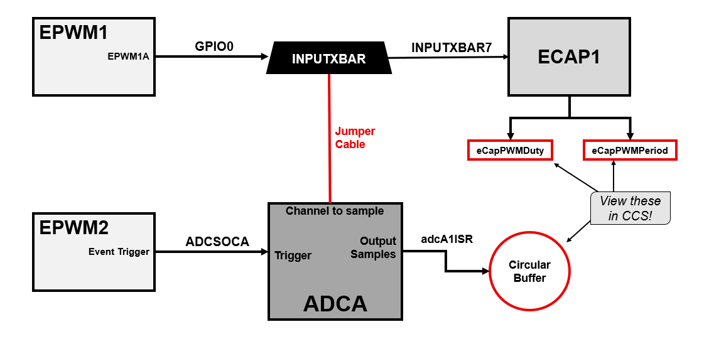
Lab Setup#
Hardware Setup#
Required hardware for this lab:
ControlSOM with the supplied USB cable.
Jumper cables (1).
Oscilloscope (optional).
This lab exercise is intended for the F29H85x ControlSOM. Before continuing this lab, please be sure to reference the ControlSOM User Guide for hardware setup details.
Using the supplied USB cable, connect the USB Type-C connector into your C2000 board and the USB Standard Type-A connector into your computer’s USB port.
Please note that the docking station is not necessary for this lab but may be required to successfully run other Academy labs.
If you are using the ControlSOM docking station, an additional power supply is needed for the docking station. See the ControlSOM User Guide for more details.
Check the power status LEDs (LED0 and LED1) to confirm that the board is powered and provides a JTAG communication link between the device and CCS.
Later in the lab we will be routing the output pin of the PWM waveform to the input pin of the ADC, so make sure that you have a jumper cable to facilitate this.
Software Setup#
Required software for this lab:
The device’s SDK
Your device’s software development kit (SDK) download can be found on the “Software Development” section of your device’s product page on TI’s website.
The Code Composer Studio (CCS) platform.
See the CCS User’s Guide for more information about this IDE.
Start a CCS Project#
Our first task is to import an empty project to our CCS workspace.
Open CCS and go to File → Import Project(s). A new window should appear.
Click the Browse button and select the
[MCU_SDK_[DEVICE]_Install_Path]/examples/driverlib/single_core/empty_projectsand click “Select Folder”.Note that the default Windows installation directory
[MCU_SDK_[DEVICE]_Install_Dir]isC:/ti/c2000/MCU_SDK_[DEVICE]_X_XX_XX_XX_XX.
Under Discovered Projects, you should now see the
empty_driverlib_project.

Click Finish to import and copy the
empty_driverlib_projectinto your CCS workspace.After the project has been imported, the project explorer window should look like below:

Rename the project:
Right-click on the project in the “Project Explorer” panel. Select Rename from the drop-down menu and rename the project to ‘ecap_academy_lab’ or a name of your choosing.
Now click the Down Arrow located to the left of the imported project to expand it and select
empty_driverlib_project.c. Right-click on the file, and select Rename to rename the file to ‘ecap_academy_lab.c’ or a name of your choosing.
Configure the GPIO#
We will now use SysConfig to set up the two GPIO signals that will be used to toggle the two LEDs. For example, for F29H85x controlSOM:
LED1 = GPIO9
LED 1#
In the project directory, open the
.syscfgfile by double-clicking on it.Navigate to the
Softwaretab in this SysConfig (it should open by default).In the ‘SYSTEM’ group, click + next to ‘GPIO’ to add a GPIO instance.
Change the GPIO settings as shown and described below.
Rename the GPIO to “myBoardLED1_GPIO”.
Change the ‘GPIO Direction’ to an “output”.
Click the box to enable ‘Write Initial Value’ and select “0” as the ‘Initial Value’.
Click on the ‘Pinmix’ drop-down to expand it, and select the board’s LED GPIO (in this case, GPIO9).
To check or confirm which GPIO is connected to your board’s LED, reference your board’s schematics.

Configure the EPWMs#
Set Up EPWM1#
We will now configure EPWM1A to output a 2kHz PWM waveform with a 25% duty cycle. We will begin by setting the EPWM clock prescalars. The EPWM clock frequency has been set to be 100MHz. Since the time base counter is 16 bits wide and (10^8/2000 < 2^16), there is no need to divide the EPWM clock. Hence, we set the clock division to 1.
Next, we will set the time base period. In this lab, we will use up-down-count mode which yields a symmetric PWM waveform. This leads to the following calculations for the time base period:
\(\text{Time Base Period}=\frac{f_{tbclk}}{2f_{pwm}}=\frac{100* 10^6}{2* 2000}=25000.\)
Note that for just up-count mode or down-count mode, the calculation would be:
\(\text{Time Base Period}=\frac{f_{tbclk}}{f_{pwm}}-1.\)
Additionally, we will set the period load mode to shadow load mode, and we will set the phase shift to be 0 since we will not be performing any synchronization.
Next, we will configure the parameters of the counter compare module for EPWM1A to achieve a 25% duty cycle. Since we are will be in up-down-count mode, a counter compare event will happen twice: once while counting up, and once while counting down. This suggests the following for a 25% duty cycle:
\(\text{Counter Compare Value}=(1-\frac{duty}{100})* tbprd=(1-\frac{25}{100})25000=18750\)
Notice that the global variable ePwm_curDuty will be
initialized accordingly. For the strict up-count or down-count modes, the calculation would be:
\(\text{Counter Compare Value}=(1-\frac{duty}{100})*(tbprd+1)-1.\)
Next, we will set the counter compare load mode so that it loads a new counter compare value
on when the EPWM counter is at zero or at the period value. This will allow us to change the value of
ePwm_curDuty in a real-time CCS debug session. Shadow load mode is also enabled to
avoid output glitches when we change the counter compare value.
Finally, we will set the counter mode to up-down-count mode. Note that we still will not have enabled the clock to the EPWM modules. This will complete the configuration of EPWM1A.
To implement the above described specifications for EPWM1 in SysConfig, first click the ‘+’ by the EPWM module of the SysConfig ‘Software’ tab to add an instance of EPWM module.

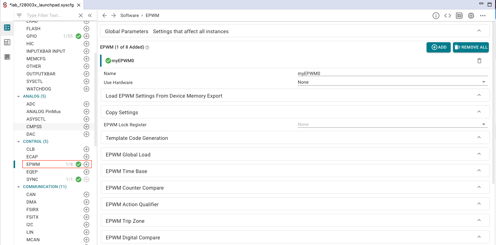
Expand the ‘EPWM Time Base’ dropdown menu, and apply the changes circled below.
Expand the ‘EPWM Counter Compare’ dropdown menu, and again apply the circled changes.

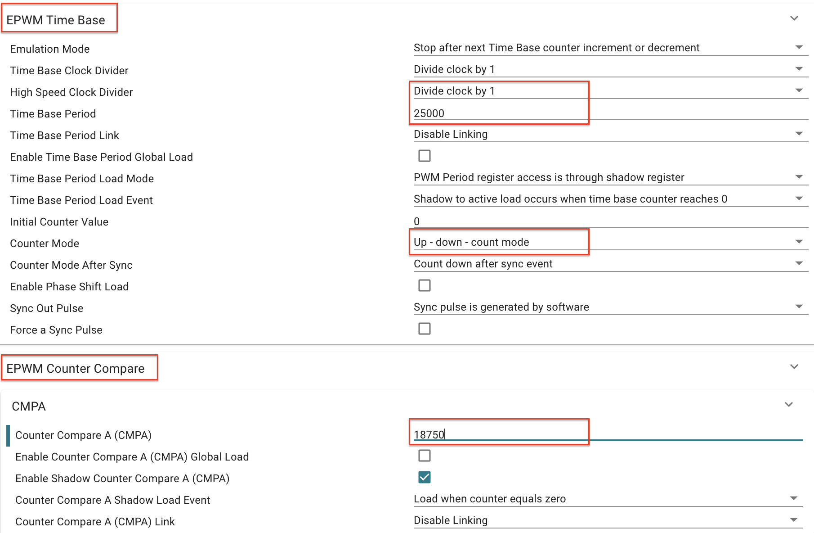
Expand the ‘EPWM Action Qualifier’ dropdown menu, then apply the changes circled below.

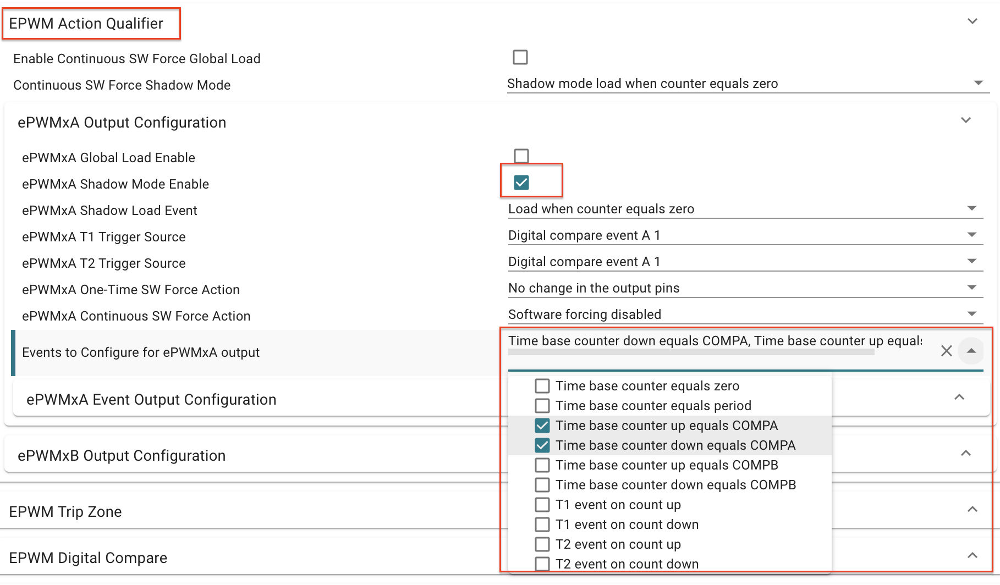
Expand the ‘EPWMxA Event Output Configuration’ dropdown menu, then apply the changes circled below.

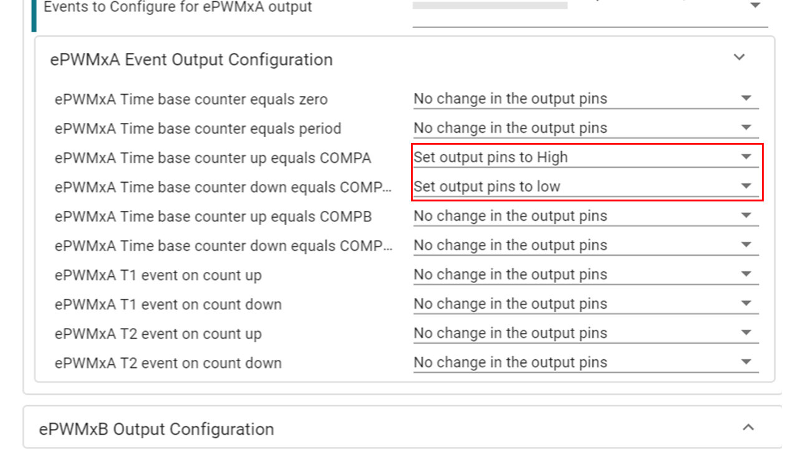
Expand the ‘PinMux Peripheral and Pin Configuration’ dropdown menu. For ‘EPWM Peripheral’, make sure to select instance EPWM1. Also, make sure to select ‘GPIO0’ for ‘EPWMA’ and select ‘GPIO1’ for ‘EPWMB’, as shown below. The pin number will vary based on hardware.

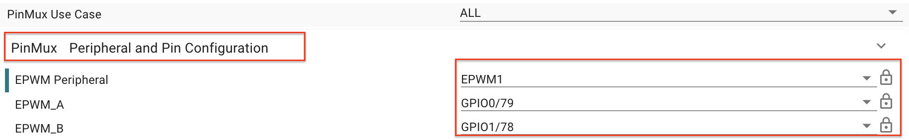
Set Up EPWM2#
In order to view the EPWM1 waveform in CCS, we will sample the EPWM1 waveform using the ADC. In general, EPWM modules can be used to trigger a start-of-conversion (SOC) event on the ADC. We will use this technique in this lab by sampling our EPWM1 waveform at a sampling rate of 50kHz via EPWM2 which will be used trigger the ADC sampling. The first steps in the configuration of EPWM2 will be identical to EPWM1. However, we will use the up-count mode rather than the up-down-count mode. Thus, to achieve a sampling rate of 50kHz, we need
\(\text{Time Base Period}=\frac{100* 10^6}{50000}-1=1999.\)
Next, we will configure EPWM2 to trigger an SOC on the ADC. Notice that the trigger source will be the event where the EPWM counter reaches the time base period value. Hence, an SOC event will occur once per EPWM2 period at a rate of 50kHz. The event prescale setting will be set to 1 since we would like the SOC to happen at each event where the counter is equal to the time base period.
To implement the above described specifications for EPWM2 in SysConfig, click the ‘+’ by EPWM to open a second instance of the EPWM module.

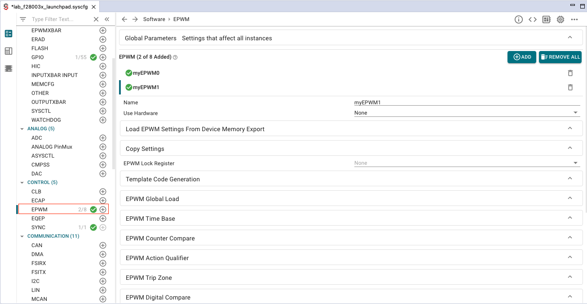
Expand the ‘EPWM Time Base’ dropdown menu, and apply the changes circled below.

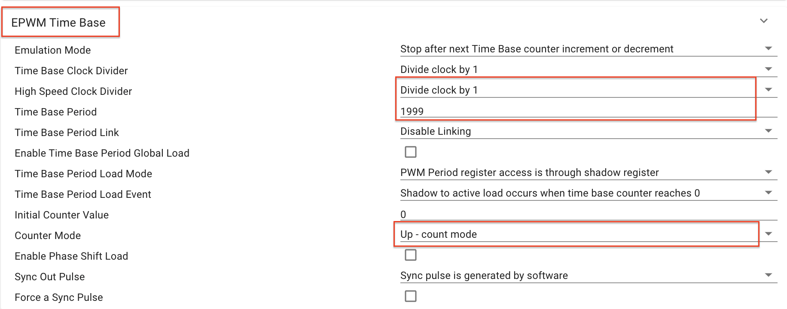
Expand the ‘EPWM Event-Trigger’ dropdown menu, and apply the changes circled below. Inside of the main function, we will add code to configure which mixed events we select for the SOCA trigger.

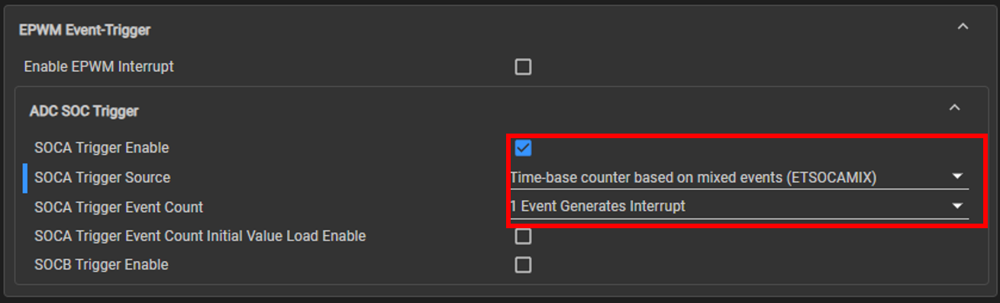
Expand the ‘PinMux Peripheral and Pin Configuration’ dropdown menu, and apply the changes circled below. Also, make sure to select ‘GPIO2’ for ‘EPWMA’ and select ‘GPIO3’ for ‘EPWMB’, as shown below. The pin number will vary based on hardware.

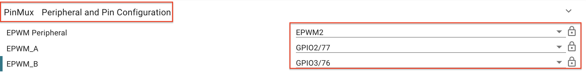
This concludes the configuration of the EPWM modules.
Configure the ADC#
In the previous section, we explained that EPWM2 would be triggering a SOC event on the ADC. In this section, we will provide the code to configure the ADC. More details about the configuration of the ADC can be found in Analog-to-Digital Converter (ADC). However, notice that we have setup a SOC to be triggered by EPWM2 and that we have setup the ADC to interrupt at the end of a conversion. Hence, the interrupt service routine will be triggered at a rate of 50kHz. The ADC is also setup in continuous mode so that the ADC register always contains the most recent sample.
Add ADC by clicking the ‘+’ by ADC in the SysConfig screen. Make sure to make the changes circled below. If your device SYSCLK is not 100MHz, you will need to change the ADC Clock Prescaler to acheive the same results.
For the ‘SOC0 Sample Window[SYSCLK counts]’ parameter, the same value may result in a different ‘SOC0 Sample Time[ns]’ on different devices, due to varying SYSCLK frequencies across devices. Make sure that the generated ‘SOC0 Sample Time[ns]’ is about 80ns.

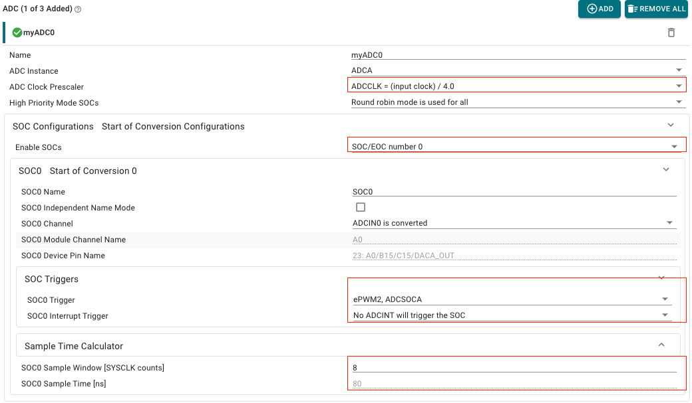
Expand the ‘Register PIE Interrupt Handlers’ dropdown menu, and register Interrupt 1, as shown below. This should trigger the ‘ADCA Interrupt 1’ dropdown menu to appear.
Expand the ‘ADCA Interrupt 1’ dropdown menu, and change the interrupt handler to ‘adcA1ISR’. Make sure this interrupt handler matches the name of the interrupt in the ISR code snippet below. Also click the checkbox to enable the interrupt in PIE, as shown below.

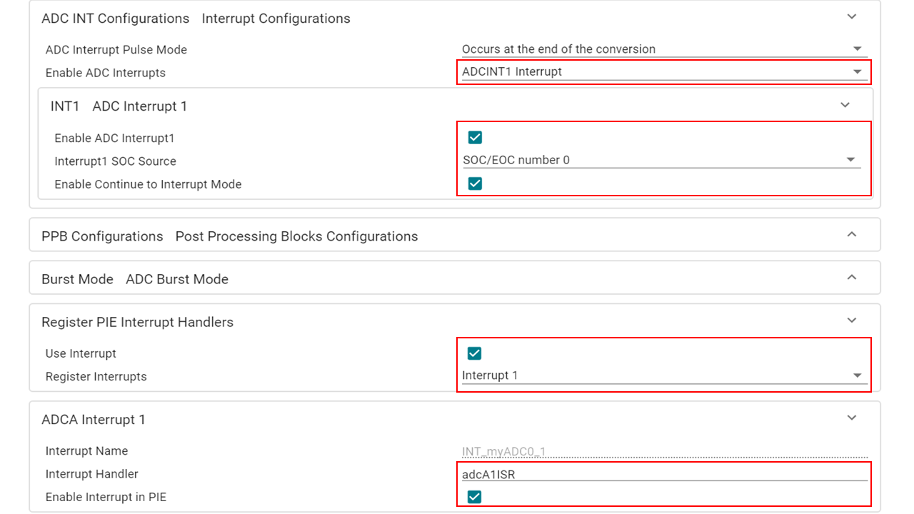
Configure the ECAP#
We can use the ECAP peripheral to measure the duty cycle and period of our EPWM1 waveform. We start by resetting the ECAP1 peripheral, disabling time stamp capture, and stopping the internal counter. This will put the ECAP1 registers in a known state, and it will freeze the internal ECAP counter. This way, when we start the ECAP, it will initially behave in a predictable manner. This can be very important for many practical usage scenarios.
To begin setting up the ECAP, clicking the ‘+’ next to the ECAP module in SysConfig.
The following setup will enable continuous capture mode with 4 sequential timestamped events. Notice the configuration of the 4 different event polarities. This configuration will allow us to measure the duty cycle from events 1 and 2, and measure the period from events 1 and 3. Since we need the internal counter to hold its count from event 1 to event 4, we have disabled the counter reset on these events.

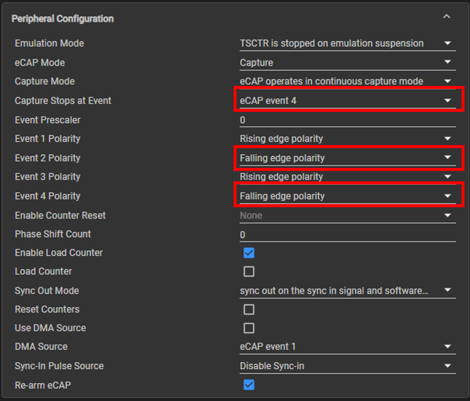
Next, we enable an interrupt after event 3 is captured. This allows us to calculate the period and duty cycle in the interrupt service routine.
Expand the ‘Interrupts Configuration’ dropdown menu
Change the interrupt handler to ‘ecap1ISR’. Make sure this interrupt handler matches the name of the interrupt in the ISR code snippet below.
Click the checkbox to enable the interrupt in PIE, as shown below.

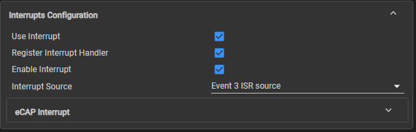
Set Up INPUT X-BAR#
The ECAP input will be the signal from XBAR_INPUT7.
GPIO0 (which contains our EPWM1 waveform) will be mapped to XBAR_INPUT7 so that it is the source of the input to the ECAP.
Now, GPIO0 (which contains our EPWM1 waveform) will be mapped to XBAR_INPUT7 below.
Add INPUTXBAR by clicking the ‘+’ in SysConfig, and apply the changes circled below. Make sure the interrupt handler matches the name of the interrupt in the ISR code snippet below.

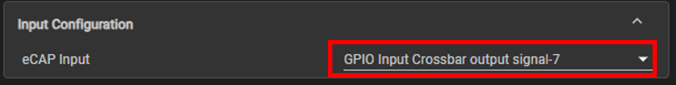
This concludes the SysConfig settings.
Program Setup#
In your project, double-click on the .c file to open it. Follow the below instructions to develop your program.
Define Global Macros and Variables#
At the top of your source .c file (after any included files), copy the following code to define necessary macros and global variables.
#include "bitfield_structs.h"
//
// Globals
//
uint32_t ePwm_TimeBase;
uint32_t ePwm_MinDuty;
uint32_t ePwm_MaxDuty;
uint32_t ePwm_curDuty;
uint16_t AdcBuf[50]; // Buffer to store ADC samples.
uint16_t *AdcBufPtr = AdcBuf; // Pointer to ADC buffer samples.
uint16_t LedCtr = 0; // Counter to slow down LED toggle in ADC ISR.
uint16_t DutyModOn = 0; // Flag to turn on/off duty cycle modulation.
uint16_t DutyModDir = 0; // Flag to control duty mod direction up/down.
uint16_t DutyModCtr = 0; // Counter to slow down rate of modulation.
int32_t eCapPwmDuty; // Percent = (eCapPwmDuty/eCapPwmPeriod)*100.
int32_t eCapPwmPeriod; // Frequency = DEVICE_SYSCLK_FREQ/eCapPwmPeriod.
Define main()#
Next, we will populate main() as shown below.
We will still need to know the system clock frequency in order
to configure our PWM waveform frequency. The system clock frequency value is
defined via the macro DEVICE_SYSCLK_FREQ in [projectroot]/syscfg/clocktree.h. Observe that
the main function only handles initialization routines. Most of the activity in
this lab lies in the peripherals themselves and their interrupt service
routines.
Copy the following code into your source .c file:
void main(void)
{
//
// Initialize device clock, peripheral clocks and interrupts
//
Device_init();
//
// Disable sync(Freeze clock to PWM as well)
//
SysCtl_disablePeripheral(SYSCTL_PERIPH_CLK_TBCLKSYNC);
//
// Board initialization
// Configure InputXbar7 as eCAP input
// Enable interrupts required for this example
//
Board_init();
//
// Configure the SOCA MIXEN
//
EPwm2Regs.ETSOCAMIXEN.bit.PRD = 0x01;
EPwm2Regs.ETSOCAMIXEN.bit.ZRO = 0x01;
//
// Enable sync and clock to PWM
//
SysCtl_enablePeripheral(SYSCTL_PERIPH_CLK_TBCLKSYNC);
//
// Record time base, duty
//
ePwm_TimeBase = EPWM_getTimeBasePeriod(myEPWM0_BASE);
ePwm_MinDuty = (uint32_t)(0.95f * (float)ePwm_TimeBase);
ePwm_MaxDuty = (uint32_t)(0.05f * (float)ePwm_TimeBase);
ePwm_curDuty = EPWM_getCounterCompareValue(myEPWM0_BASE, EPWM_COUNTER_COMPARE_A);
//
// Enable PIPE Global Interrupt (for INTs and RTINTs) and INT enable in CPU.
//
ENINT;
Interrupt_enableGlobal();
//
// Loop forever. Suspend or place breakpoints to observe the buffers.
//
for(;;)
{
__asm(" NOP #1");
}
}
Set Up the ADC ISR#
In this section, we will define the ADC interrupt service routine (ISR). This ISR will store samples from the ADC in a circular buffer so that we can view the EPWM1 waveform using the real-time debug features in CCS. The necessary code is shown below. In addition to storing the ADC samples in a circular buffer, this ISR also toggles one of the board LEDs at a rate of 1Hz and allows for the duty cycle of EPWM1A to be changed on the fly or be modulated during a CCS debug session.
The global flag variable DutyModOn controls whether or not the duty cycle is modulated:
When
DutyModOnis set to 1, the PWM waveform duty cycle slowly scale from 5% to 95% and back down to 5% (and repeat).
Copy the following code into your source .c file below main():
void INT_myADC0_1_ISR(void)
{
//
// Clear interrupt flags.
//
ADC_clearInterruptStatus(myADC0_BASE, ADC_INT_NUMBER1);
//
// Write contents of the ADC register to a circular buffer.
//
*AdcBufPtr = ADC_readResult(myADC0_RESULT_BASE, myADC0_SOC0);
if (AdcBufPtr == (AdcBuf + 49))
{
//
// Force buffer to wrap around.
//
AdcBufPtr = AdcBuf;
} else {
AdcBufPtr += 1;
}
if (LedCtr >= 49999) {
//
// Divide 50kHz sample rate by 50e3 to toggle LED at a rate of 1Hz.
//
GPIO_togglePin(myBoardLED0_GPIO);
LedCtr = 0;
} else {
LedCtr += 1;
}
if (DutyModOn) {
//
// Divide 50kHz sample rate by 16 to slow down duty modulation.
//
if (DutyModCtr >= 15) {
if (DutyModDir == 0) {
//
// Increment State => Decrease Duty Cycle.
//
if (ePwm_curDuty >= ePwm_MinDuty) {
DutyModDir = 1;
} else {
ePwm_curDuty += 1;
}
} else {
//
// Decrement State => Increase Duty Cycle.
//
if (ePwm_curDuty <= ePwm_MaxDuty) {
DutyModDir = 0;
} else {
ePwm_curDuty -= 1;
}
}
DutyModCtr = 0;
} else {
DutyModCtr += 1;
}
}
//
// Set the counter compare value.
//
EPWM_setCounterCompareValue(myEPWM0_BASE, EPWM_COUNTER_COMPARE_A, ePwm_curDuty);
}
Set Up the ECAP ISR#
In the SysConfig section, we enabled an interrupt on the ECAP in SysConfig. The corresponding
interrupt service routine (ISR) is named INT_myECAP0_ISR and is shown below. The global
variable eCapPwmPeriod stores the difference between the ECAP timestamps from
event 3 and 1, which allows us to calculate the period. Since the ECAP units
operate on the system clock, the frequency of the PWM waveform can be
calculated using:
\(f_{pwm}\approx\frac{\text{DEVICE_SYSCLK_FREQ}}{\text{eCapPwmPeriod}}.\)
The global variable eCapPwmDuty will store the difference between the ECAP
timestamps from event 2 and 1, which allows us to calculate the duty cycle. The
duty cycle can be calculated via:
\(\text{duty}\approx\frac{\text{eCapPwmDuty}}{\text{eCapPwmPeriod}}100.\)
Copy the following code into your source .c file below the last ISR:
void INT_myECAP0_ISR(void)
{
ECAP_clearGlobalInterrupt(myECAP0_BASE);
ECAP_clearInterrupt(myECAP0_BASE, ECAP_ISR_SOURCE_CAPTURE_EVENT_3);
//
// Calculate duty and period using eCAP reading
// Divide eCAP values by 2, since eCAP runs at 200Mhz
// ePWM runs at 100Mhz
//
eCapPwmDuty = (int32_t)ECAP_getEventTimeStamp(myECAP0_BASE, ECAP_EVENT_2) -
(int32_t)ECAP_getEventTimeStamp(myECAP0_BASE, ECAP_EVENT_1);
eCapPwmDuty = eCapPwmDuty >> 1;
eCapPwmPeriod = (int32_t)ECAP_getEventTimeStamp(myECAP0_BASE, ECAP_EVENT_3) -
(int32_t)ECAP_getEventTimeStamp(myECAP0_BASE, ECAP_EVENT_1);
eCapPwmPeriod = eCapPwmPeriod >> 1;
}
This concludes the coding portion of this lab.
Build the Project#
With the configurations and code complete, we can ‘Build’ the project to check for any errors. Once the project builds without errors, we will connect to the device, load the program to the device, and run it within a debug session.
Right-click on your project and hover over the Build Configurations button until another panel pops up. Select the CPU1_RAM build configuration.
With the RAM configuration selected, the project will be loaded to the RAM memory of the device.
Right-click on your project again and select Build Project(s) to build your program. Fix any compilation errors.
Run the Project#
Now we will start a debug session.
Connect the EPWM1A GPIO pin to the ADCINA0 GPIO pin using a jumper cable. If you have an oscilloscope, connect a probe to the EPWM1A GPIO pin on your board. See your device schematics to obtain signal pin numbers.
Device |
ADCINA0 Pin |
EPWM1A Pin |
|---|---|---|
F29H85x |
119 |
15 |
Ensure that the USB cable from your board is connected to your computer.
Right-click on your project and select Debug Project.
If prompted, check that only CPU1 is selected to load the program to.
This action should re-build your project, connect to the debugger, and load the program to the device.
The DEBUG window should populate and the debugger should have paused at the beginning of your
main().

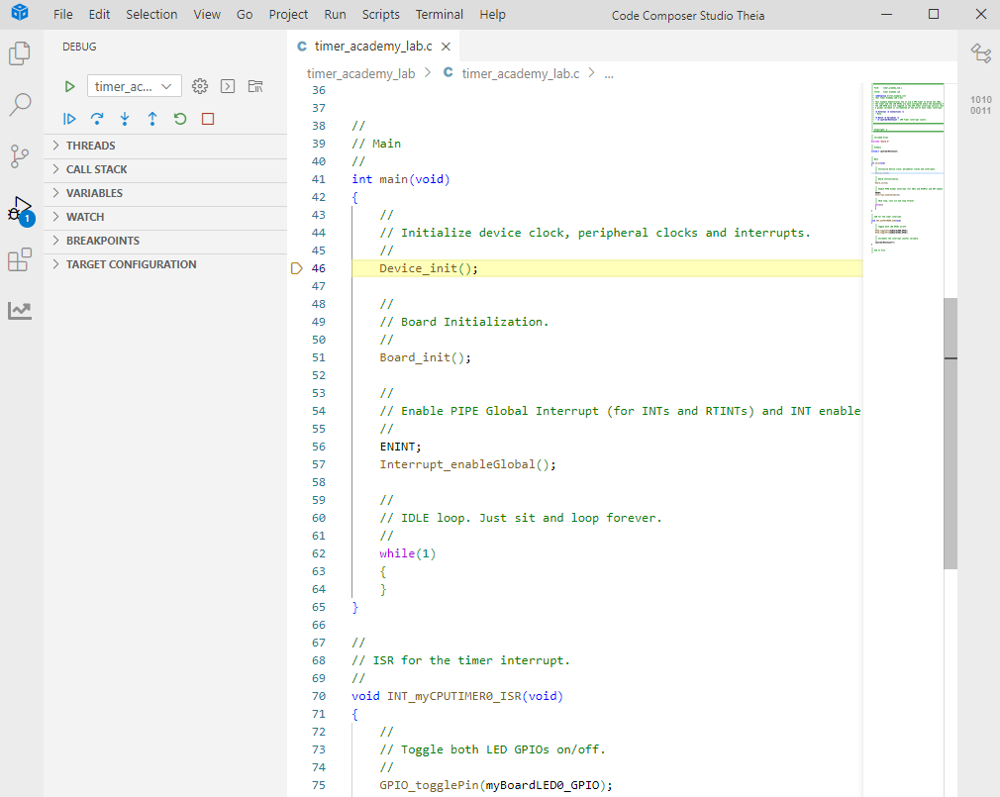
Now we will continue the debug session and the
main()by clicking the blue Continue button in the upper left corner.Note that there are several other buttons that can be used to help debug your project by stepping through your program line by line. Feel free to explore them here, or see the CCS User’s Guide for more details on its capabilities.
Click the Resume button.
Validate the Project#
With the project now running freely, we can now check to see if the project is running as expected
You should see the LED on your board toggling at about 1Hz which indicates that the sampling rate is 50kHz as desired.
Find the
eCapPwmDutyandeCapPwmPeriodglobal variables in the debug source code window, highlight their text, right click, and click Add Watch Expression. Activate the Continuous Refresh option. If all is well, the expressions pane should show values ofeCapPwmDutyandeCapPwmPeriodsuch that \(\frac{\text{eCapPwmDuty}}{\text{eCapPwmPeriod}}100\approx25\) which indicates the correct duty cycle of 25%. Additionally, \(\frac{\text{DEVICE_SYSCLK_FREQ}}{\text{eCapPwmPeriod}}\approx2000\) which indicates the correct PWM frequency of 2kHz.

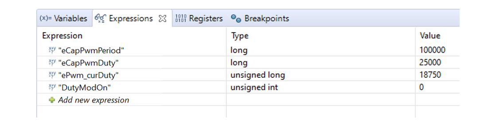
Now we will view our waveform from the samples in
AdcBuf. Add AdcBuf to the watch window by going to Watch -> Add Expression. After this, right click on theAdcBufwatch variable and Graph Selected Value.

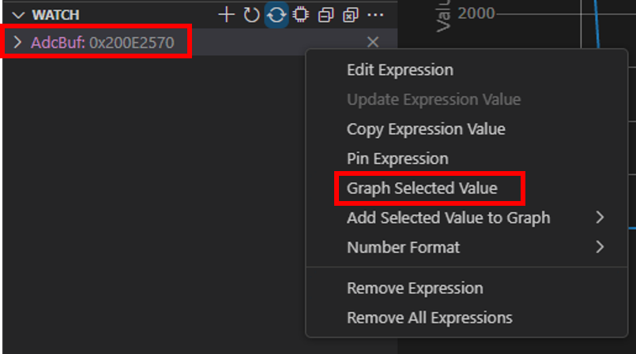

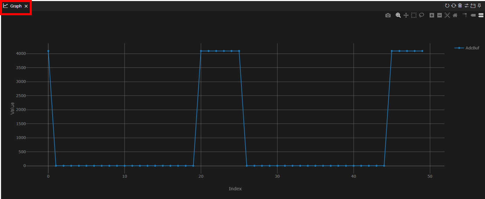
Next, add
ePwm_curDutyto the watch expression list. Play with values ofePwm_curDutyfrom 1250 to 23750. You should see the duty cycle of the PWM waveform change in real-time in the plot window. The readings from the ECAP should also update in real-time.Add
DutyModOnto the watch expression list. Change the value to 1. you should now see the duty cycle modulate in real-time from 5% to 95% in the plot window.

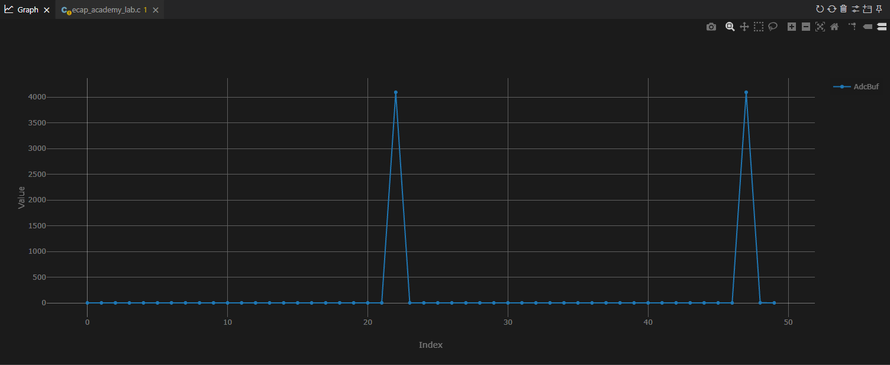
Terminate the Debug Session and Close the Project#
With the project developed and validated, we can close this debug session.
Click the red Stop button at the top of your
DEBUGwindow to terminate the active debug session and disconnect the debuggerYou can return to the
Project Explorerwindow by clicking on the corresponding button at the top of the panel on the left.
This concludes the lab exercise.
Full Solution#
Recall that the completed software solution is available as well. Please refer to the top of this page to review the location of this lab’s software solution.